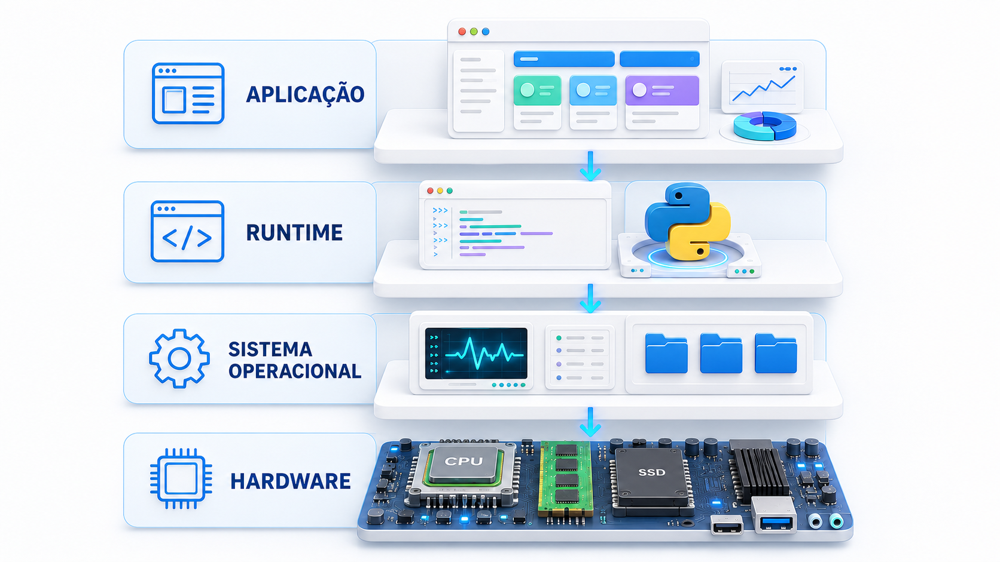
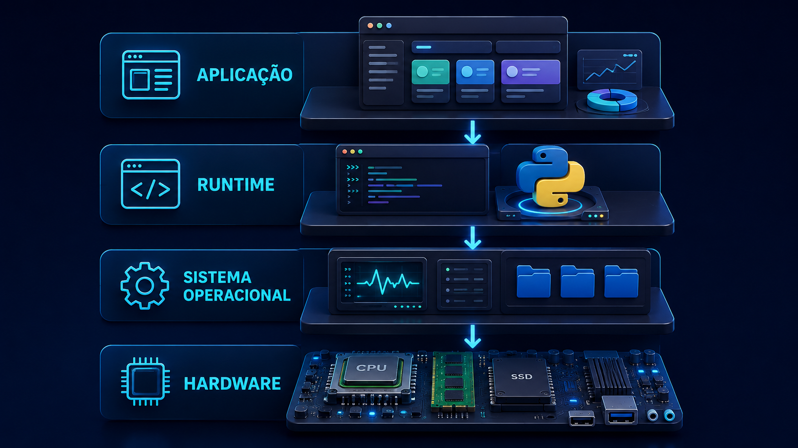

Conteúdo programático
Camadas de um sistema computacional
Percurso de execução de um programa
Hardware, SO, runtime e aplicação
Arquitetura inicial do projeto PBL
Baseline, logs, testes e métricas
Missão do PBL, medição inicial e Registro 0
Aula 02 · Primeiro encontro efetivo
Quando um programa é executado, ele atravessa camadas, disputa recursos e deixa evidências observáveis.
Visão da aula
A aula apresenta a disciplina, diagnostica conhecimentos prévios e inicia o projeto de processamento concorrente a partir de uma versão sequencial fornecida.
Percurso de 4 horas
A aula alterna explicações curtas, construção coletiva, leitura guiada do código-base, experimentos simples e registros de hipótese.
Antes de explicar
Use as perguntas ao lado para levantar hipóteses iniciais sem corrigir imediatamente. A turma retomará essas hipóteses depois de observar o programa em execução.
Modelo inicial
As camadas não são caixas isoladas. Cada uma oferece abstrações para a camada acima e depende de mecanismos da camada abaixo.


Recebe tarefas, organiza dados, produz resultados e registra eventos.
Interpreta ou executa o código, gerencia objetos e expõe bibliotecas.
Cria processos, agenda execução, gerencia memória, arquivos e dispositivos.
Processador, memória, armazenamento e periféricos realizam operações concretas.
Escolha uma aplicação usada pela equipe e descreva uma ação simples, como abrir um arquivo ou enviar uma mensagem.
Compare respostas e destaque que a mesma ação pode envolver CPU, memória e E/S em proporções diferentes.
Percurso de execução
Um programa em execução deixa de ser apenas texto: torna-se processo, recebe memória, usa CPU, solicita serviços e interage com arquivos e dispositivos.
dados = [4, 7, 2, 9]
total = 0
for valor in dados:
total += valor * valor
with open("resultado.txt", "w", encoding="utf-8") as arquivo:
arquivo.write(str(total))
print("Resultado:", total)Leia o programa antes de executá-lo. Registre uma hipótese para o percurso do código e identifique quais camadas participam de cada ação.
resultado.txt.
Regra: primeiro formule a explicação da equipe; depois consulte materiais, ferramentas ou IA e confronte as respostas com evidências.
Onde o código está armazenado antes da execução?
Qual programa lê e executa o arquivo Python?
Quem cria o processo responsável pela execução?
Onde ficam armazenadas as variáveis dados e total?
Qual componente realiza as operações de multiplicação e soma?
Como o programa solicita a criação do arquivo resultado.txt?
O Python escreve diretamente no SSD ou solicita esse serviço ao sistema operacional?
Quais resultados podem ser observados depois da execução?
Que evidências poderiam comprovar cada etapa do fluxo?
Organize a resposta por camada e diferencie hipótese, pesquisa e observação.
Na primeira rodada, priorize responsabilidades: quem executa, quem gerencia, onde os dados ficam, quem realiza o cálculo e quem controla arquivos e terminal. Bytecode, registradores e chamadas de sistema específicas podem ser aprofundados depois.
Execute o script com uma ferramenta de rastreamento e procure evidências de abertura, escrita e fechamento do arquivo resultado.txt, além da saída enviada ao terminal.
Use o Process Monitor do Sysinternals para capturar operações do processo Python no sistema de arquivos e no console.
Procmon64.exe /AcceptEula /Quiet /BackingFile rastros-windows.pml
python exemplo_fluxo.py
Procmon64.exe /Terminaterastros-windows.pml no Process Monitor.
Filtre por Process Name contendo python.
Procure operações como CreateFile, WriteFile e CloseFile.
Use strace para registrar chamadas de sistema relacionadas a processo, arquivos e escrita.
python3 exemplo_fluxo.py
strace -f -o rastros-linux.txt -e trace=execve,openat,write,close python3 exemplo_fluxo.py
grep -E "resultado.txt|write|execve" rastros-linux.txtresultado.txt.
Compare as chamadas write do arquivo e do terminal.
Relacione cada evidência com aplicação, runtime, sistema operacional e hardware.
Síntese após a pesquisa
O objetivo não é memorizar detalhes internos neste momento, mas reconhecer as responsabilidades de cada camada.
Projeto PBL do semestre
O trabalho completo será construído em etapas. Hoje você conhecerá apenas o ponto de partida fornecido pelo professor; threads, processos, sincronização e otimizações serão introduzidos nas aulas seguintes.
O baseline lê tarefas de arquivos JSON, processa uma por vez, grava resultados e logs e produz métricas básicas. Ele já possui testes e entradas de tamanhos diferentes. A equipe não começará do zero.
Arquivos pequeno, médio e grande permitem repetir os experimentos.
As tarefas são processadas uma por vez, na ordem da entrada.
Uma operação determinística e CPU-bound torna o custo observável.
O programa grava resultados JSON, log da execução e resumo no terminal.
Tempo total, tempo de CPU, pico de memória e vazão serão comparados.
As versões futuras deverão preservar os resultados esperados.
A mesma aplicação será evoluída a partir de pontos de extensão preparados.
Cada melhoria deverá declarar ganhos, custos, riscos e limitações.
Missão de hoje
Em equipe, execute a entrada pequena uma vez, reconheça o fluxo principal e registre uma primeira observação. Não é necessário produzir gráficos, realizar benchmark extenso ou alterar o código.
Leia o README e localize main.py, as entradas, os testes, os resultados e os logs.
Execute python -m unittest discover -s tests -v e observe se os testes passam.
Use python main.py --entrada entradas/pequena.json.
Abra o resultado, o arquivo de métricas e o log gerados pelo programa.
Identifique entrada, processamento, saída e participação das camadas estudadas.
Indique qual recurso pode se tornar limitante quando a carga aumentar e explique por quê.
Entrega formativa
Esta é uma entrega pequena e sem nota isolada. Ela inicia o portfólio de experimentos e comprova que a equipe conseguiu executar e explicar o ponto de partida.
Hoje, preencha apenas a primeira linha. As linhas seguintes poderão ser utilizadas nas próximas investigações para observar variabilidade.
| Execução | Entrada | Tarefas | Tempo total (s) | Tempo CPU (s) | Pico memória (MiB) | Vazão (tarefas/s) | Correto? | Observações |
|---|---|---|---|---|---|---|---|---|
| 1 — hoje | ||||||||
| 2 — futura | ||||||||
| 3 — futura |
Os valores podem ser copiados de outputs/metricas_pequena.json. O pico de memória é medido de forma dependente do sistema operacional; por isso, o ambiente deve ser registrado em comparações futuras.
“O programa recebe ________, processa ________, produz ________ e deixa como evidência ________.”
Critérios de evidência
Na disciplina, uma afirmação técnica será mais forte quando puder ser reproduzida, medida e confrontada com outras hipóteses.
Mesma entrada, configuração conhecida e saída comparável.
Casos comuns, casos-limite e falhas deliberadas.
Horários, identificadores, etapas e mensagens de erro.
Tempo, vazão, uso de CPU, memória, E/S e número de tarefas.
Processos, arquivos, chamadas e recursos observados por ferramentas.
Contexto, versão, ambiente, hipótese, decisão e incertezas.
Leitura crítica
Fechamento
Compare as hipóteses do aquecimento com o que foi observado na versão sequencial do projeto.
Uma aplicação é executada por meio da cooperação entre código, runtime, sistema operacional e hardware. Compreender essas camadas permite formular hipóteses sobre desempenho e correção. Logs, testes, métricas e documentação transformam explicações em evidências técnicas.
Complete as frases com base na aula.